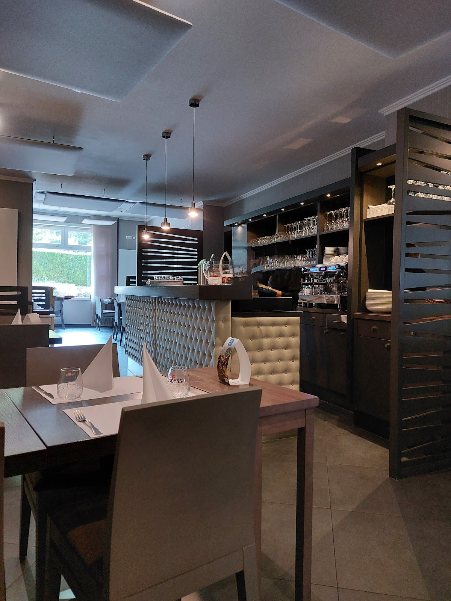
Penalty
Grillades généreuses.
Le grill croate d'Oberkorn : mix grill, ćevapi et pljeskavica, viande soignée et portions généreuses, dans une salle sombre, tout en bois. Une adresse du quartier.
Toute la grillade croate, sur une assiette.
Le mix grill réunit les spécialités : ćevapčići, pljeskavica, brochettes et viandes grillées, servis avec ajvar et oignons.
On vient pour la grillade et la générosité de l'assiette. Une cuisine des Balkans franche, sans esbroufe, dans une salle en bois sombre et lumière basse — un vrai restaurant de quartier.
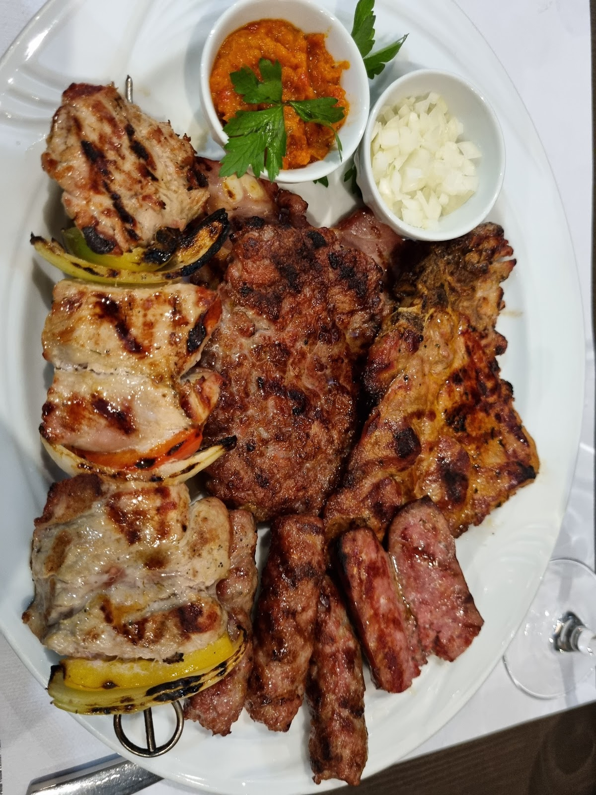
Grillades & spécialités.
Une sélection d'après nos photos — la carte complète et les prix se découvrent en salle.
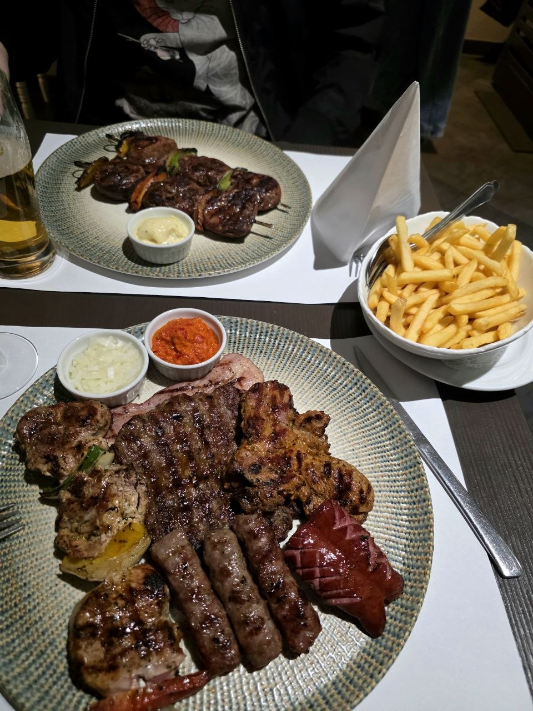
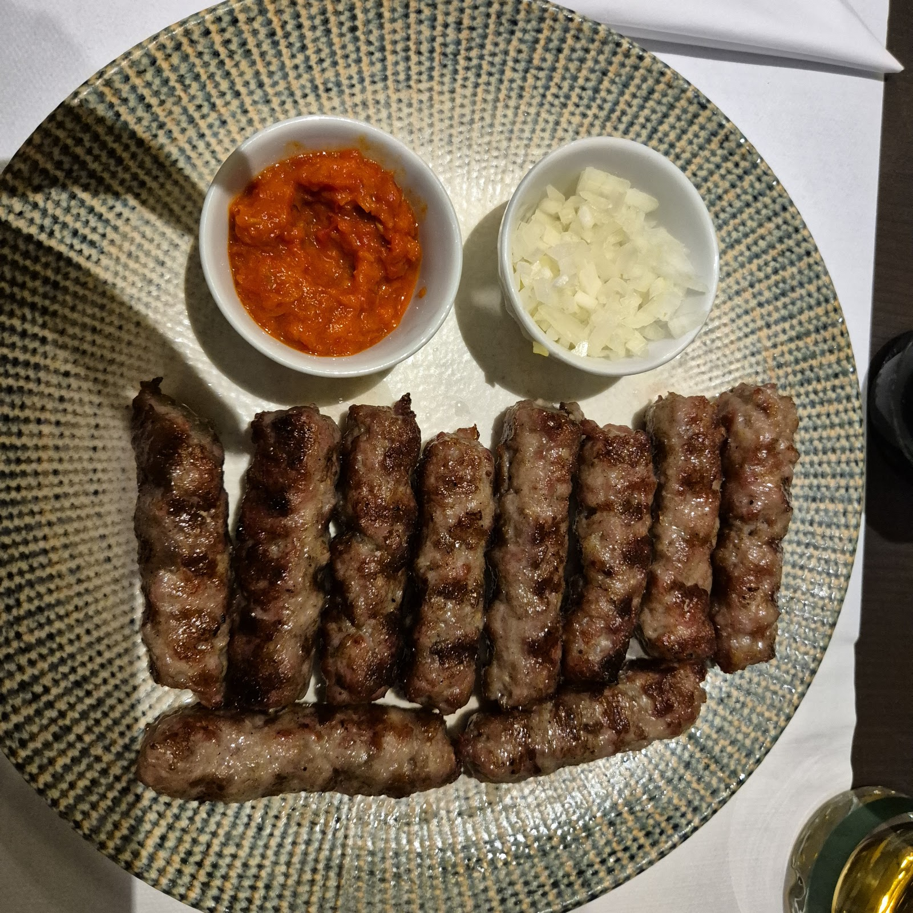
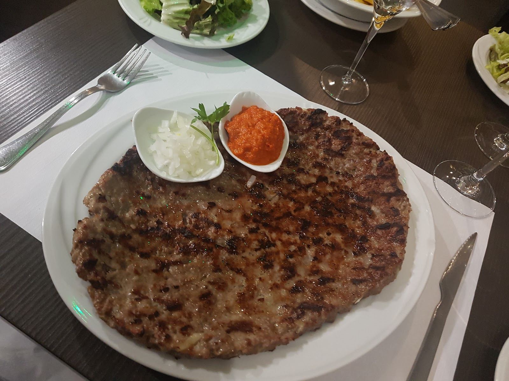
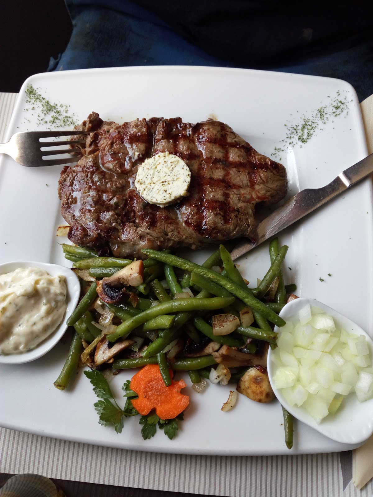
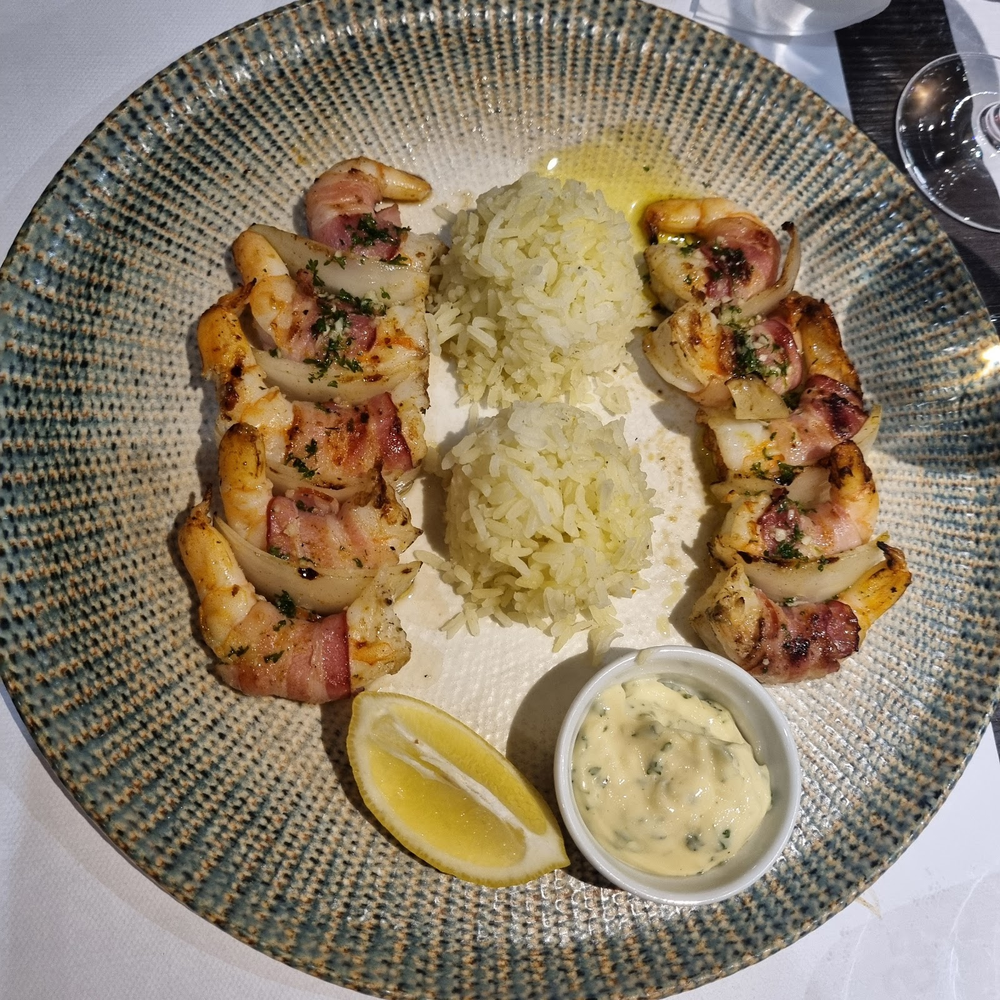
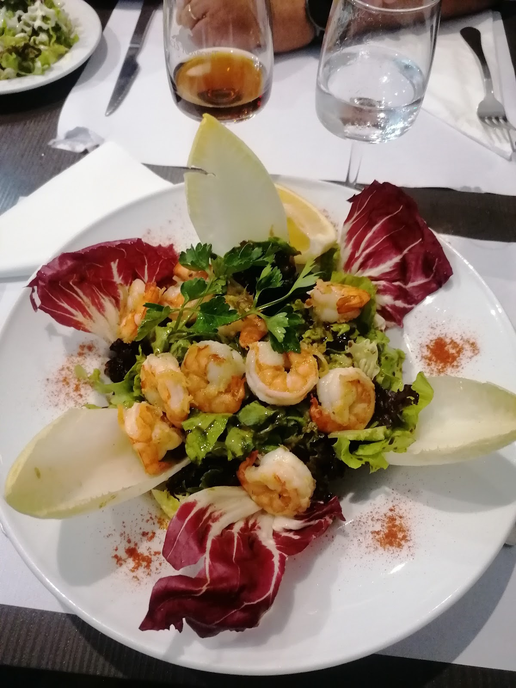
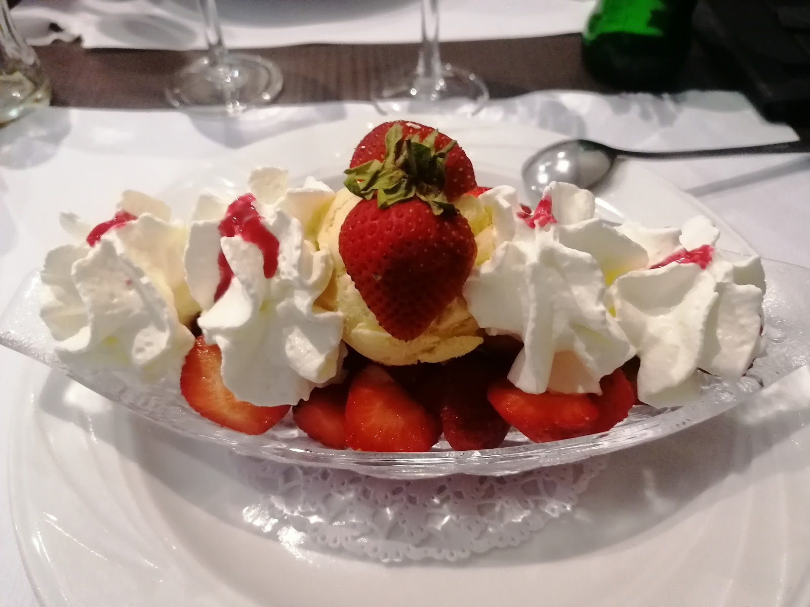
Des vins de Croatie à la carte — Dingač, Plavac Mali — pour accompagner la grillade.
Plats d'après nos photos ; les plats « populaires » sont signalés par Google. Carte et prix en salle — à confirmer avec la maison.
Bois sombre, lumière basse.
Une salle chaleureuse et feutrée, à deux pas de la gare d'Oberkorn — pour un dîner tranquille ou une tablée qui s'attarde. Repas sur place ou à emporter.
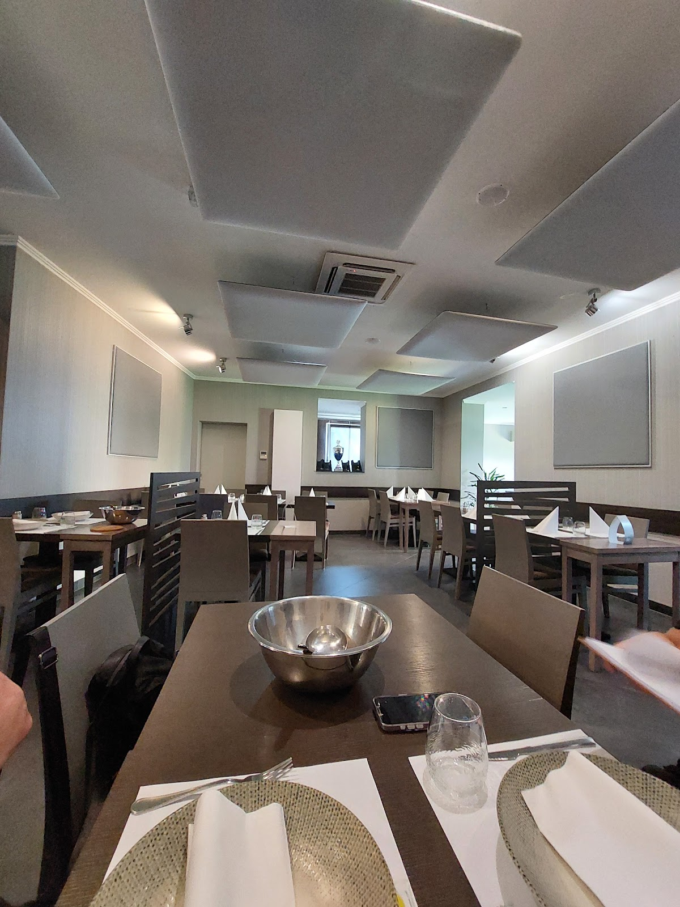
Rue de la Gare, Oberkorn.
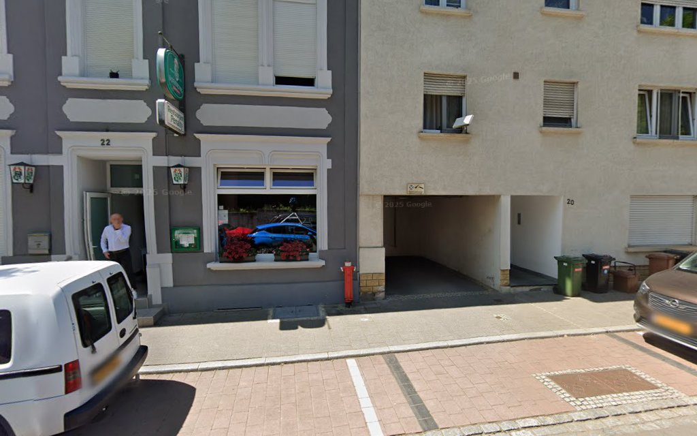